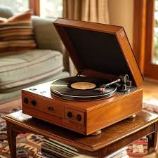

A record player, also known as a turntable, is a device designed to play vinyl records by converting the physical grooves on the disc into audible sound. It offers a rich, analog listening experience that many audiophiles and music enthusiasts appreciate for its warm tones and smooth sound.
At the center of a record player is the vinyl record itself, which contains music encoded as microscopic grooves. As the record spins on the platter, a needle traces these grooves. The needle is attached to a cartridge that converts the mechanical vibrations into electrical signals. These signals are then amplified and sent to speakers, producing music.
Record players are primarily used for music playback, catering to both casual listeners and serious music fanatics. They are also favored by DJs for live performances and mixing, particularly models with direct-drive systems. Beyond functionality, record players serve as nostalgic and aesthetic pieces, often appreciated for their vintage appeal and a more tactile experience.
On this site, you can find guides for setting up and using your new Record Player, as well as information on troubleshooting, and the answers to many Frequently Asked Questions. If you run into any issues, don't hesitate to reach out via our Contact page!
Rotates the vinyl at a consistent speed, with two main settings: 33⅓ RPM for 12-inch records, and 45 RPM for smaller 7-inch records.
Holds the needle and guides it across the record surface. The tonearm can be lifted manually to start and stop playback, as well as to seek to a position on the record. The tonearm uses a cueing mechanism to slow its descent, in order to prevent damage to the record.
Reads the grooves on the vinyl and converts them into audio signals. The vibrations felt by the needle are converted into an audio signal that can be amplified and played back live.
Sends converted audio signals to a speaker or other audio device for easy playback.